(The only high resolution photo available at the current time is the
overall laser with the beam path drawn in, below, sorry.)
|
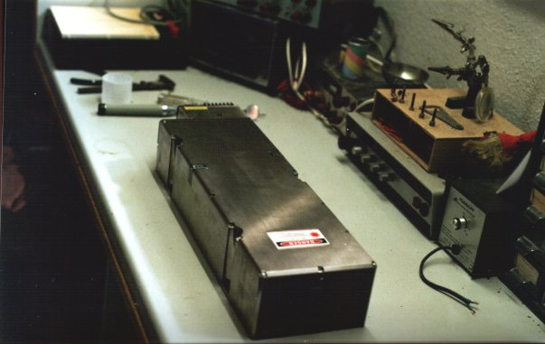
Here it is: A 10 W CW diode pumped Nd:YAG laser from
Lightwave Electronics.
It is a model 221 (221-1064-V01), lasing at 1064 nM (not doubled
(yet)). It is manufactured in october 1998. The operating hours are
recorded in an eeprom, which i have not been able to gain access to yet.
I got the manual for the laser along with it, but it is not overly
informative on the tecnical side. It does have pinouts for the
connectors, and an individual test sheet for diode current, temperature
and stuff. The laser is supposed to be controlled by an external
powersupply and a chiller, which i did not get along with the laser. It
is supposed to be cooled by temperature controlled water at about 10-15
°C. The powersupply should deliver approx 23 Amps to the diodes,
25 A max. I dont know the voltage, but the 4 pumping diode arrays
are connected in series, so I guess it is around 8 Volts.
|
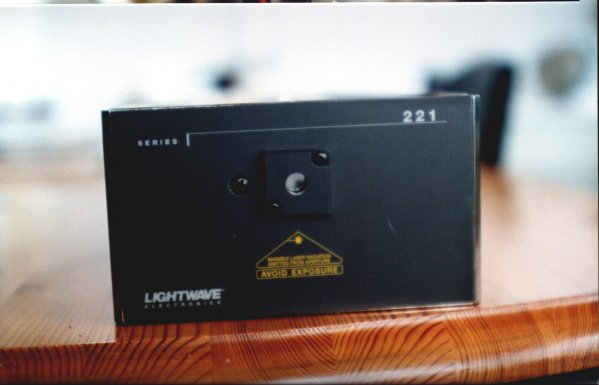
And a front view, showing the output window.
|
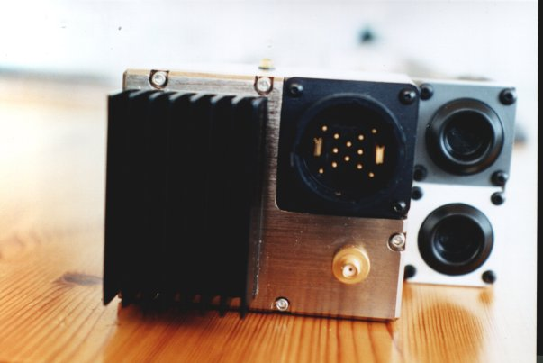
And a rear view, showing the PSU connector, modulation
connector, heatsink for the AOM driver, and in-and outlet for chilled
water for the diodes.
|
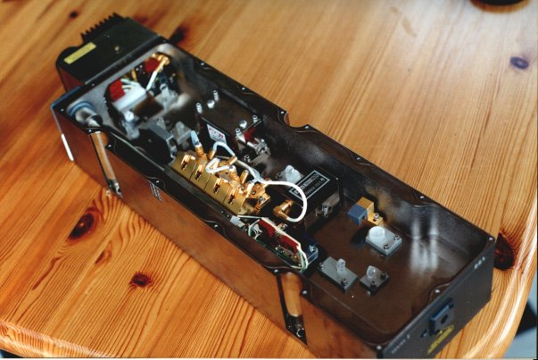
OK. It's been almost 10 minutes since the postman brought
it here: GOTTA YANK THE LID OFF!
|
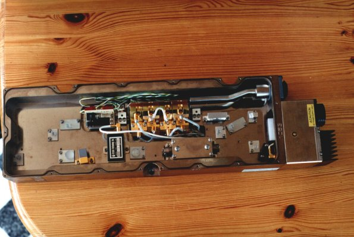
Another full view of the insides of the laser.
|
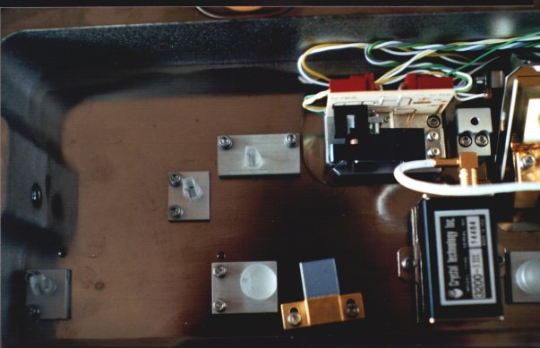
Optics at the output end of the laser.
|
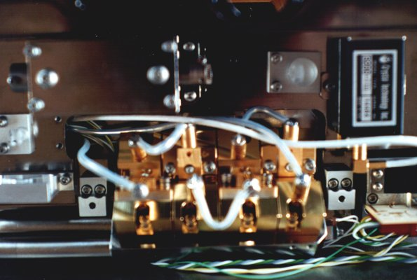
The center part of the laser, with the YAG pumping
assembly and the AOM (a bit blurry, sorry).
|
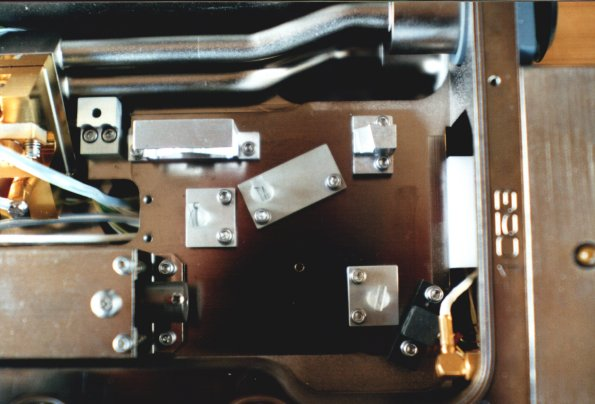
The back end of the laser with the beam shaping optics and photodetector.
|
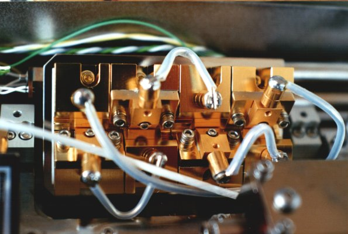
The YAG pumping assembly. It consists of 4
individual diode bars. I think they are 20 watts each.
|
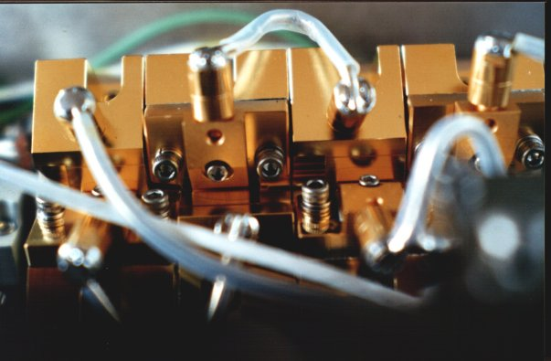
Another view of the pumping assembly. You can just spot
the end of one of the two YAG rods below the unbracho screw in the
center of the picture. They are VERY thin - about one millimeter in
diameter - and 4-5 cm long.
|
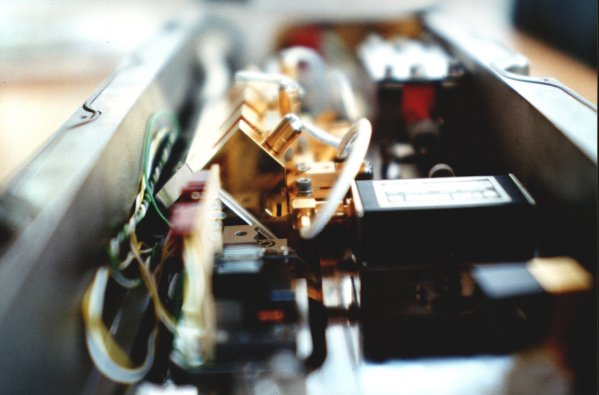
A view into the end of the yag rod and assembly.
|
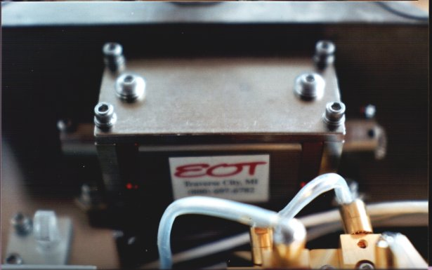
According to Bob, this strange gizmo is a called
a "Faraday isolator". Its purpose is to prevent laser reflections
going back into the laser cavity. It's like a diode for light.
|
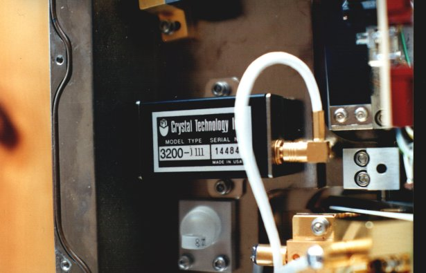
The AOM. For some reason it is only capable of dimming
the laser down to approximately 3 watts.
|
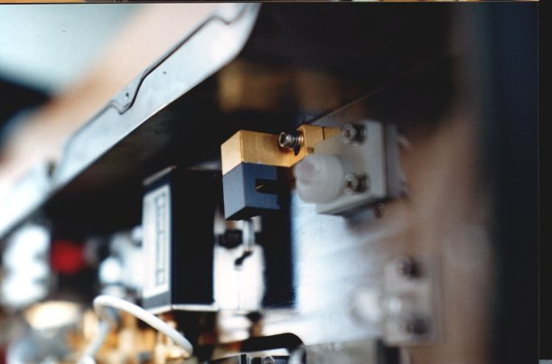
At first I thought this was a holder for a KTP
crystal, if you wanted to double the output frequency to 532 nm
(the laser is available in a 532 nm version too). But now I know,
it is just a beamblock for the beams from the AOM, when the AOM
turns off the light.
|
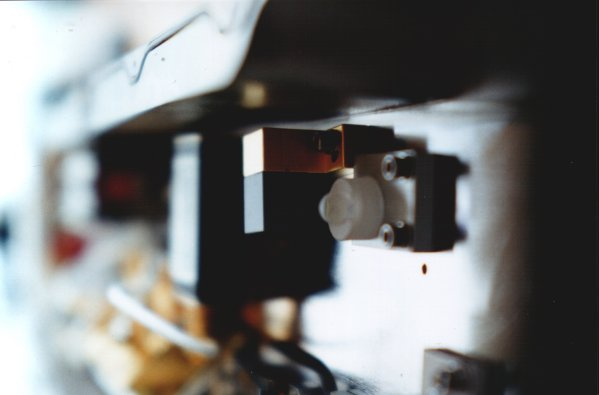
Another view of the beamblock, with the AOM in the background.
|
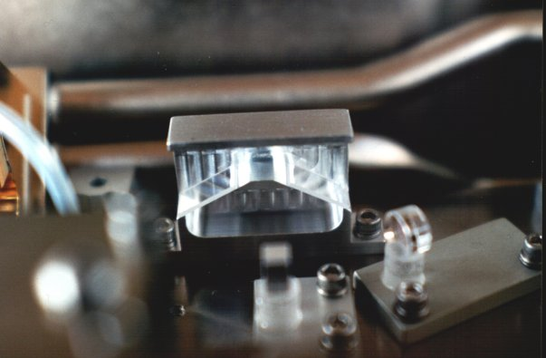
The beam shaping prism assembly, placed at the end of the YAG pumping
assembly.
|
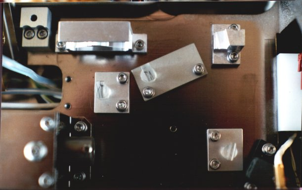
Another view of the back end of the laser, with the
beamshaping, mirrors, photodetector and so on.
|
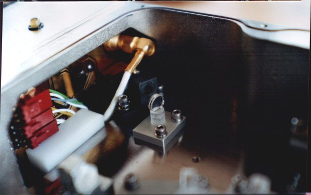
The photodetector, behind one of the mirrors.
Gotta remember to tighten that screw on the photodetector.
|
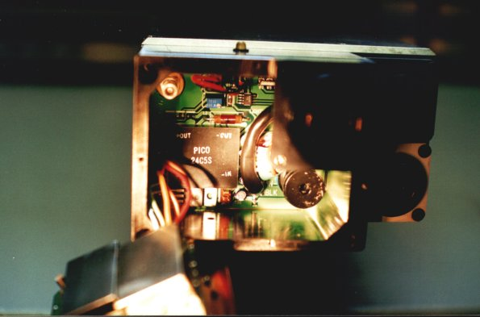
The insides of the back electronics box. The round black
thing in the bottom is a coil, connected in series with the diodes.
Strangely enough there doesn't seem to be a relay to short the diodes,
when they are not in use, to prevent damage from static discharge. I
hope the diodes are still OK, or else this is going to be a very
expensive project. :-(
|
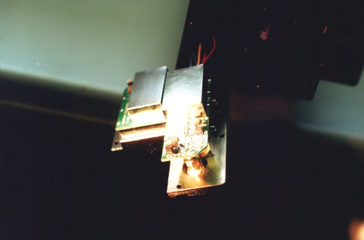
The controlling HF electronics for the mounted on the
backplate.
|
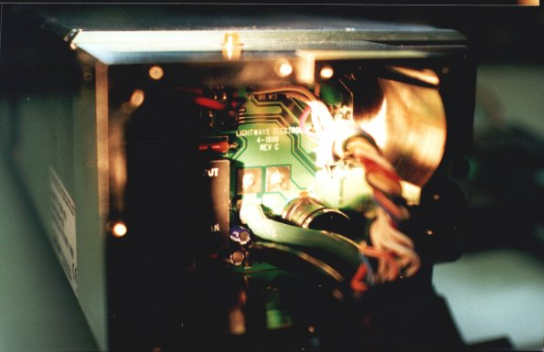
Another view of the electronics.
|
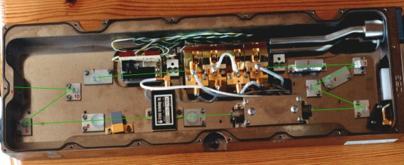
Here is a picture of the laser with the beam path drawn
on, the way I think it is. A few people have told me that this
is actually an advanced ring laser cavity, but Bob and a few other
people have convinced me that it is not... Unfortunately that also
makes it more or less impossible to double the laser to 532 nm green
operation, without changing more or less all the optics. :-(
To my luck they had written on some of the optics, what they
are, but I have a bit of difficulty reading their writing and
understanding their terms, so a bit of help would be appreciated!
I have put numbers on the optics on the picture, with the writing on them,
here:
- "200 CM HR IH" (I understand that it has 200 cm radius of curvature, and
is an HR mirror, but what is IH)?
- This is the beam shaping prism assembly. I could not find any writing on
it.
- There is no writing on this optic either, but on the holder, "JS" is
engraved.
- "200 CM OC IV" (output coupler with 200 cm curvature, IV
maybe just mean 4, but why 4)?
- "FL+ HR/HT JX" (FL+ could also be FLT (Filter?) HR and HT are understood,
but I thought they meant the opposite of each other, and what is JX (could
be TX (transmissive)?
- "FL+ HR Blood" (FL+ could be FLT, Blood could be Bleed or Blccd, I have
no idea what this means, except the HR part).
- "32mm JC" (JC could be TC or IC. I guess this is some focusing optic for
focusing the laser light into the AOM. (32 mm focal length)?
- "75mm HZ" (again I guess something about 75 mm focal length, but what does
HZ mean)?
- "FL+ HR JX" (FL+ could be FLT, JX could be TX or IX. again, I understand
the HR, but the rest, I don't know anything about.
- "FL+ HR/HT JX" (FL+ could be FLT, JX could be TX or IX. Don't know what
this does).
- Output coupler. There is no text on the optic, but it looks like it has
some kind of coating, reddish metallic looking.
|